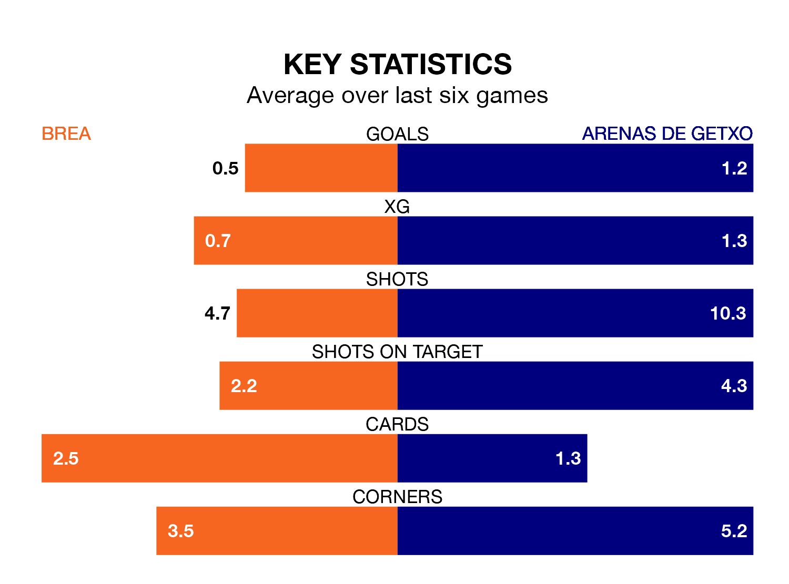

Arenas de Getxo travel to Brea on Sunday in the Segunda División RFEF Group 2.
The visitors come into the game on the back of a draw in their last match, having tied with Real Sociedad III 2-2 away, with a goal from Jon Sillero Monreal.
Brea, meanwhile, lost their last match, 1-0 against UD Mutilvera.
Brea are 16th in the table after 23 games, of which they have won four and drawn five, earning 17 points.
Arenas de Getxo are three places ahead of the home team in 13th, with four wins and 10 draws putting them on 22 points.
Brea are in disappointing form in the Segunda División RFEF Group 2, with one win and two draws from their last six games.
With a win and three draws over that period, the visitors' form is slightly better – they have taken six points from 18, compared to Brea's five.
With 11 goals in 23 games so far this season, the hosts are the league's lowest scorers with 0.5 goals per game. And they are conceding more than average, letting in 33 goals at a rate of 1.4 per game.
Arenas de Getxo are also below average scorers, with 0.9 goals per game, compared to a league average of 1.1. They have conceded 1.2 goals per game.
In the last three years, Brea and Arenas de Getxo have played each other on three occasions. Arenas de Getxo won two of them and they drew once.
Their last meeting was on October 22, when they played out a 0-0 draw.
Updated: 10:08 (UTC), 23/02/24